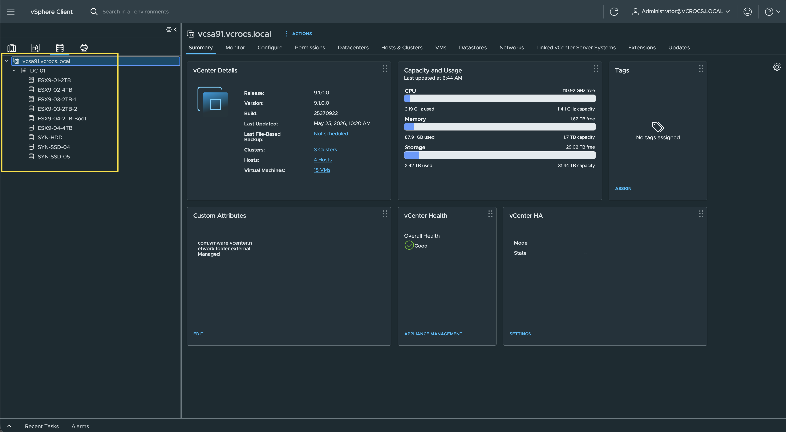
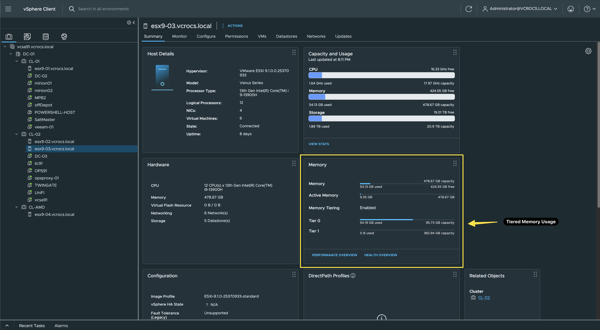
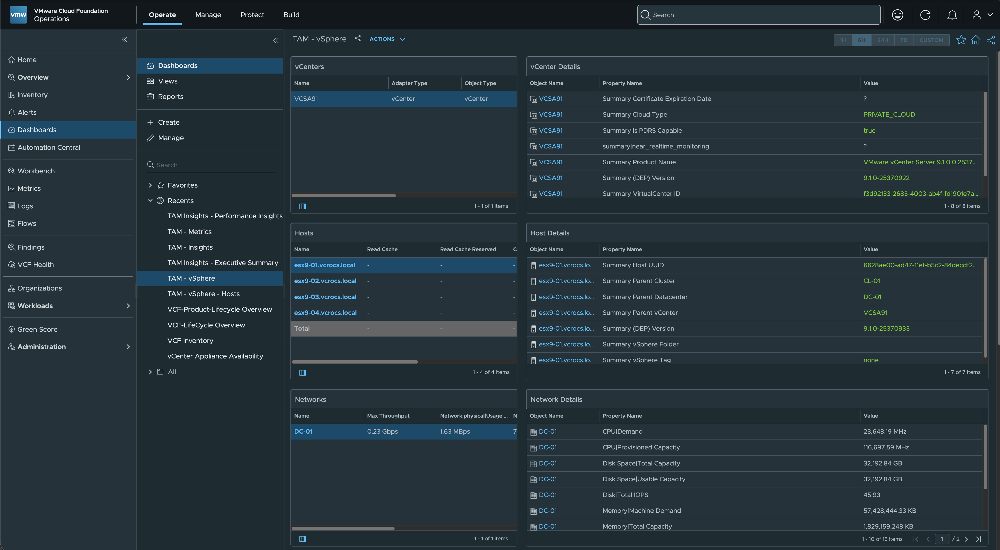
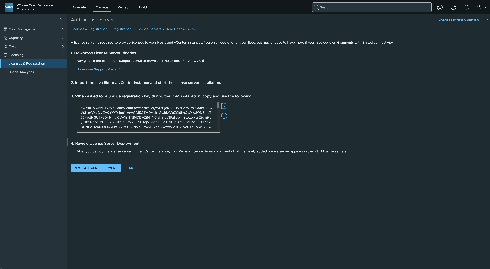
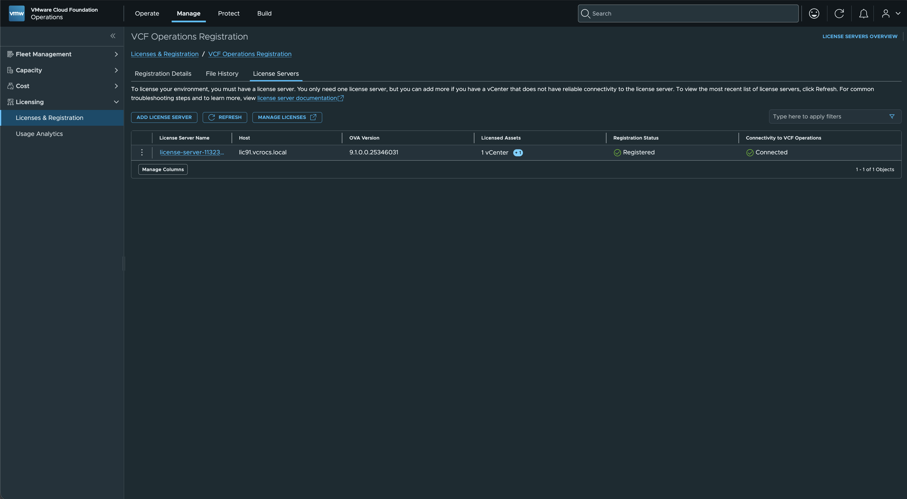
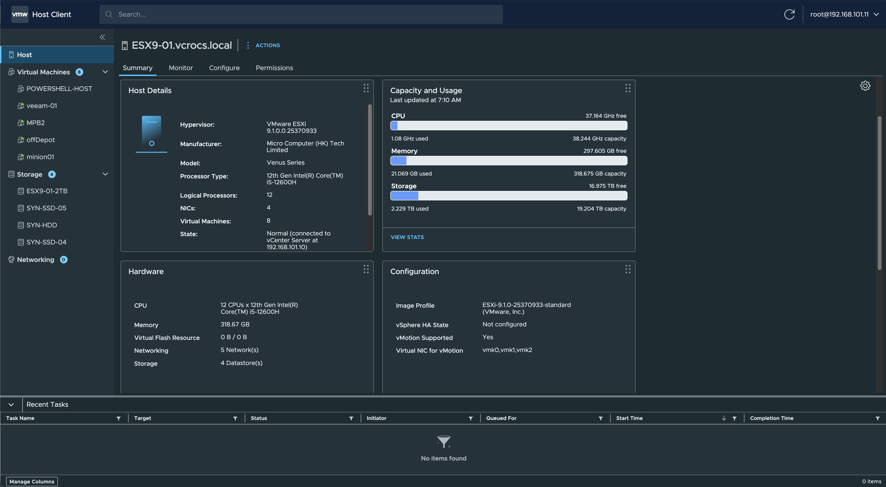
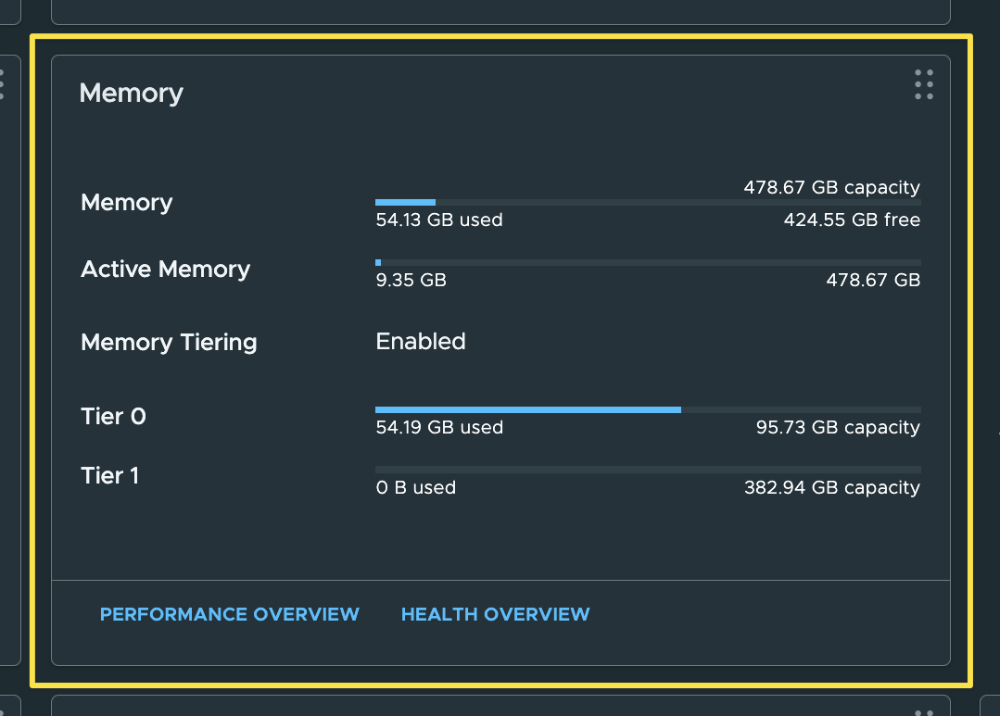
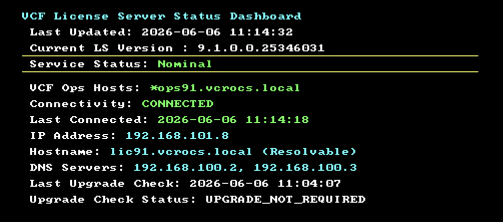
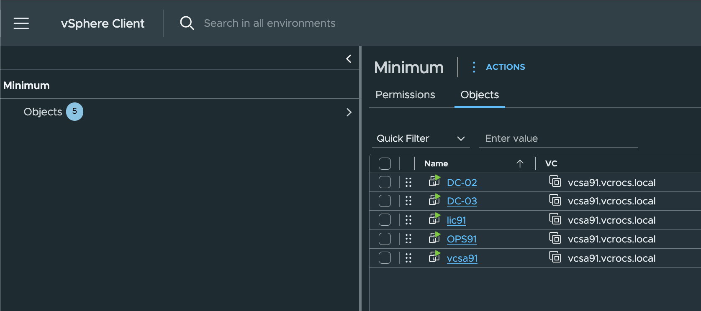

VCF 9.1 | Minimum Lab Build

What is the Minimum You Need to Build a VCF 9.1 Lab?
This post details the minimum requirements to build a lab environment for evaluating VMware Cloud Foundation (VCF) 9.1. If you want to learn VCF 9.1 but lack the hardware resources for a full deployment, this minimal footprint is an option. I completed this process in my lab using four Minisforum servers and wanted to share the workflow with the vCommunity. A single Minisforum server would have enough resources to start.
To start, you need access to support.broadcom.com to download the software. For home lab access, I highly recommend joining the VMUG Advantage Program.
VMUG Advantage Official Web Site
Deployment Order and Component Installation
To complete this minimal setup, deploy the components in the following order:
1. ESX 9.1
2. vCenter 9.1
3. VCF 9.1 Operations
4. VCF 9.1 License Server
1. ESX 9.1
I performed a greenfield installation of VCF 9.1. First, I updated the lab hosts by installing ESX 9.1 on each server via a USB drive.
For storage, I use NFS with my Synology NAS.
Simple Storage layout:
- 3 Shared NFS drives and each host also has local NVMe Storage

Tiered Memory:
I am using Memory Tiering on all the ESX Hosts in my lab. With a minimum VCF install I wasn't able to use the vCenter GUI to enable the tiered memory so I ran these commands from the CLI.
Tiered Memory is a game changer for home labs. I highly recommend you take advantage of this feature, plus it lets you do some testing in a lab environment to see how the performance works. Personally, I have had no issues with Tiered Memory in my Home Lab. 👍🏻
# List the storage adapters and the devices attached to each adapter.
# Use this command to identify the NVMe device you want to use for tiered memory.
# Look for the correct NVMe disk UID before running the enable command.
esxcli storage core adapter device list
# Place the ESX host into Maintenance Mode before enabling tiered memory.
# This helps ensure the host is in a safe state before changing memory tiering configuration.
esxcli system maintenanceMode set --enable true
# Enable Memory Tiering on the selected NVMe device.
# Replace <NVMe-UID> with the actual NVMe disk identifier from the device list command.
#
# -d specifies the NVMe device to use for the memory tier.
# -r sets the tiering ratio. In this example, 400 means a 4:1 ratio.
# Example: 256 GB of DRAM could be expanded with up to 1 TB of NVMe-backed tiered memory.
esxcli memtier enable -d /vmfs/devices/disks/<NVMe-UID> -r 400
# Check the current Memory Tiering status on the ESX host.
# This confirms whether tiered memory is enabled and shows the configured ratio.
esxcli memtier status get
# List the devices currently configured for Memory Tiering.
# Use this to verify that the expected NVMe device is assigned to the memory tier.
esxcli memtier device list
# Exit Maintenance Mode after tiered memory has been enabled and verified.
# The host can now return to normal operation.
esxcli system maintenanceMode set --enable false
reboot
Screenshot of Tiered Memory in vCenter:

2. vCenter 9.1
Once ESX 9.1 was running on all hosts, I deployed vCenter using the standard method: mounting the vCenter ISO and completing the GUI installation.
3. VCF Operations 9.1 & VCF License Server
Next, I manually deployed VCF Operations using the OVA file. This step must happen before setting up licensing, as VCF 9.1 requires a license server, which is managed through VCF Operations. The license server was also deployed using the OVA file.
The minimum install allows you to use most of the VCF Operations OOTB features that are not specific to a full VCF install.
- Here is a TAM Management Pack Dashboard

Add a License Server within VCF Operations:
- Very Similar to adding a Cloud Proxy Server to VCF Operations.

License Server within VCF Operations:

Post-Installation Notes
- ESX 9.1 Host GUI: Features an updated user interface with a similar look and feel to vCenter. 👍🏻

- Tiered Memory: vCenter now displays Tiered0 and Tiered1 memory metrics at the host and cluster level when Tiered Memory is active.

- License Server: Configuration changes cannot be made post-deployment. The license server architecture favors deploying a new instance over troubleshooting existing deployments.

- VCF 9.1 Topology: The inventory shows the active vCenter and required core VMs.

- vCenter, Operations, License Server, (2) DCs
- Very Simple Install
- Infrastructure Prerequisites: Active Directory and DNS services were offloaded to two pre-existing Windows Servers.
- Lab Philosophy: I always recommend keeping a home lab simple when you first start learning. You can add components as you acquire more resources and time.
- Scalability: While my ultimate goal is a full VCF deployment, this approach demonstrates how to start small and scale over time.
- Next Steps: As I expand this environment, my next focus areas for learning and integration will be VCF Operations for Logs and VCF Automation.
Lab Architecture Notes:
Conclusion
The standard VCF 9.1 installer was not used for this minimal lab environment.
This method allows you to stand up a basic VCF 9.1 environment for educational purposes without standard hardware prerequisites. With current hardware procurement lead times stretching out and the high cost of memory making lab expansions expensive, this minimal architecture offers a path to start learning VCF 9.1 immediately.